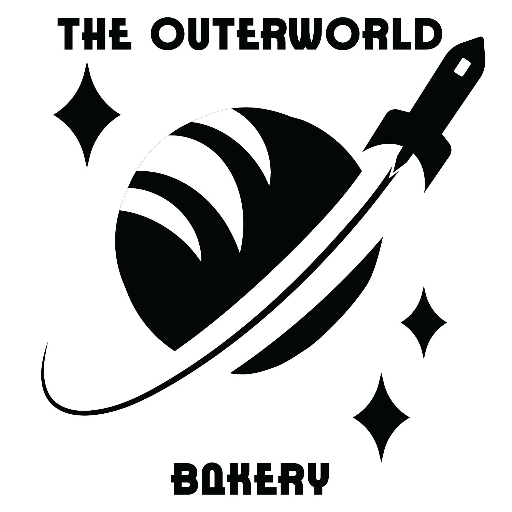
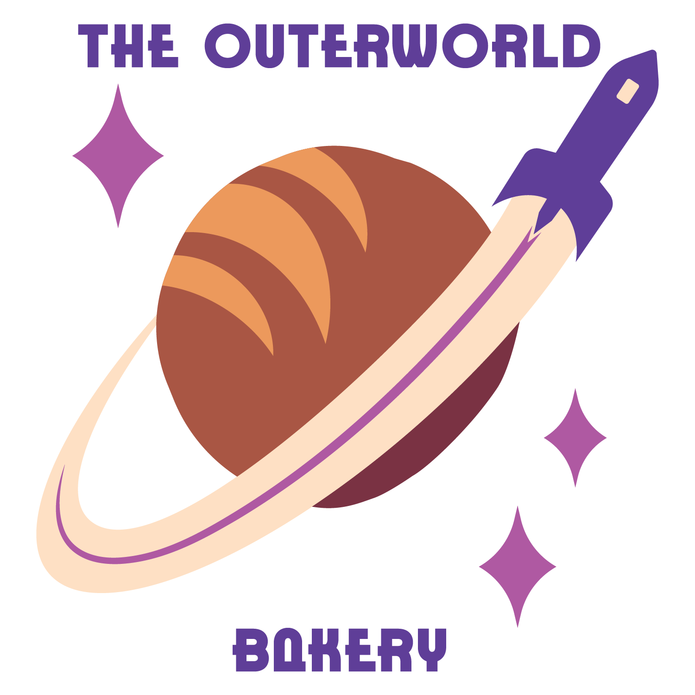
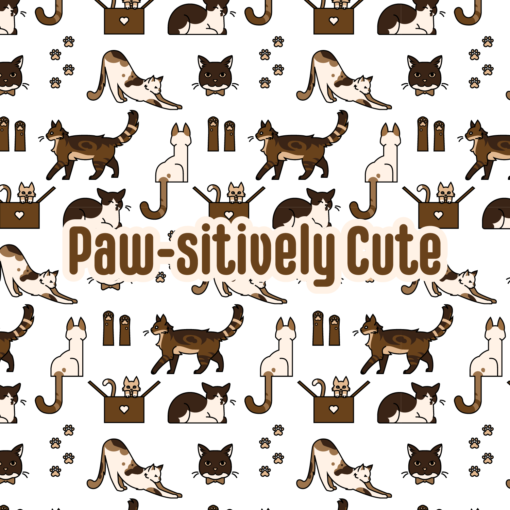

Arcadia Found
A small scale collaboration done for Brackey's Game Jam, a week‐long game development competition hosted on itch.io
Contributed:
- Menu button UI design
- Introduction scene art
- Talksprite art (Midori, Bela, Mary, Jedidiah, Zwei)
Hello, I am Trinity, a freelance artist specializing in graphic design and 2D illustration. I design with diligence, ensuring every client's creative vision is brought to life.
Commissions are currently open for illustration and design work. Email me if you’re interested.
A small scale collaboration done for Brackey's Game Jam, a week‐long game development competition hosted on itch.io
Contributed:
A Homestuck-inspired fan-comic created by Joise Rolann.
Contributed:


